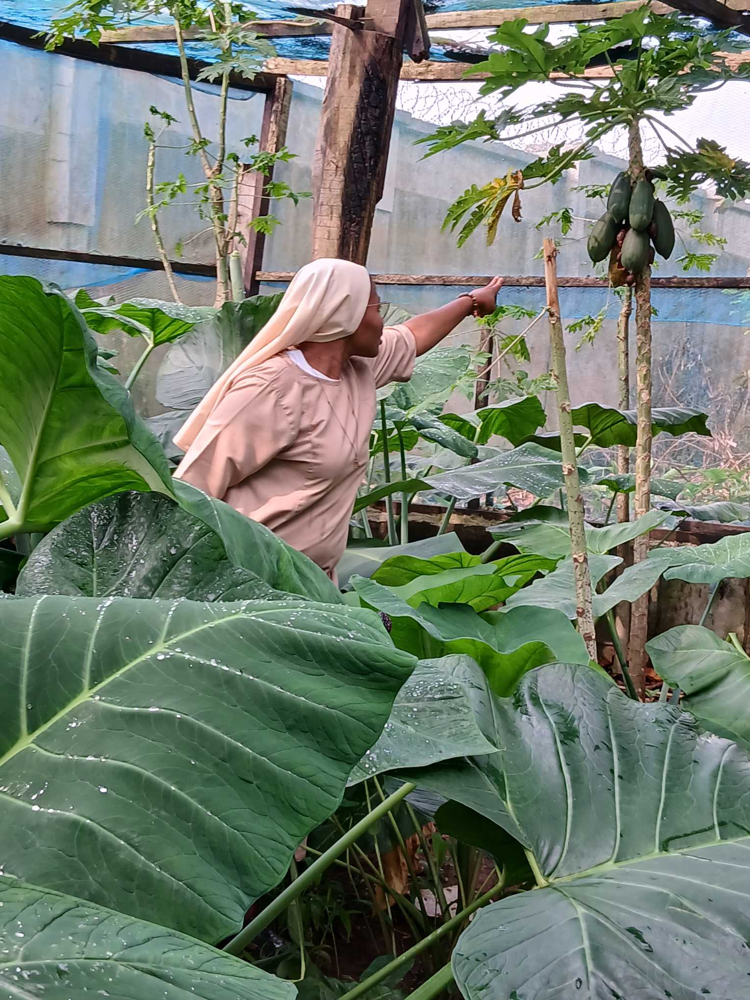
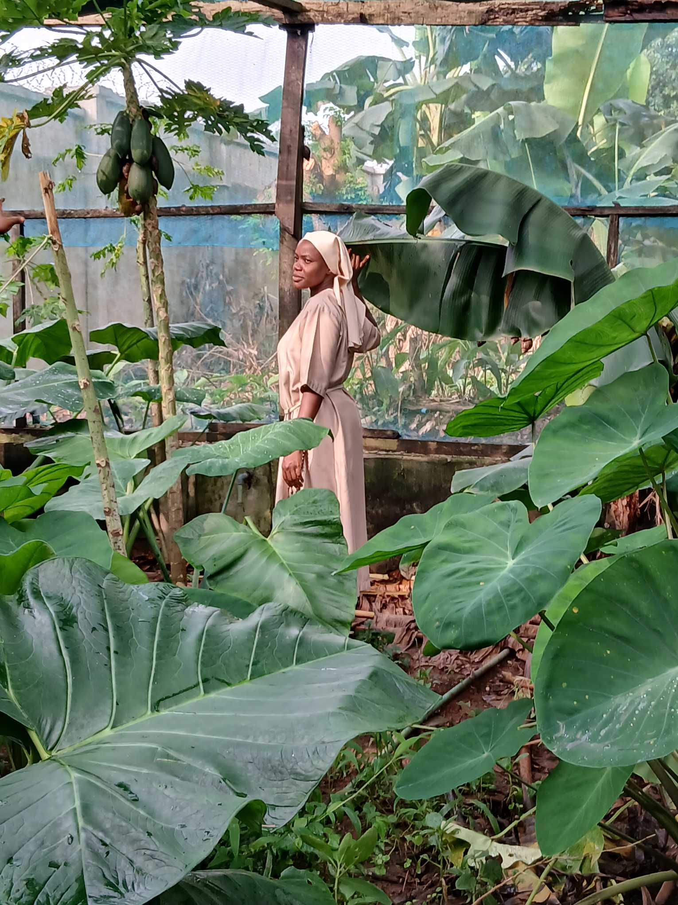
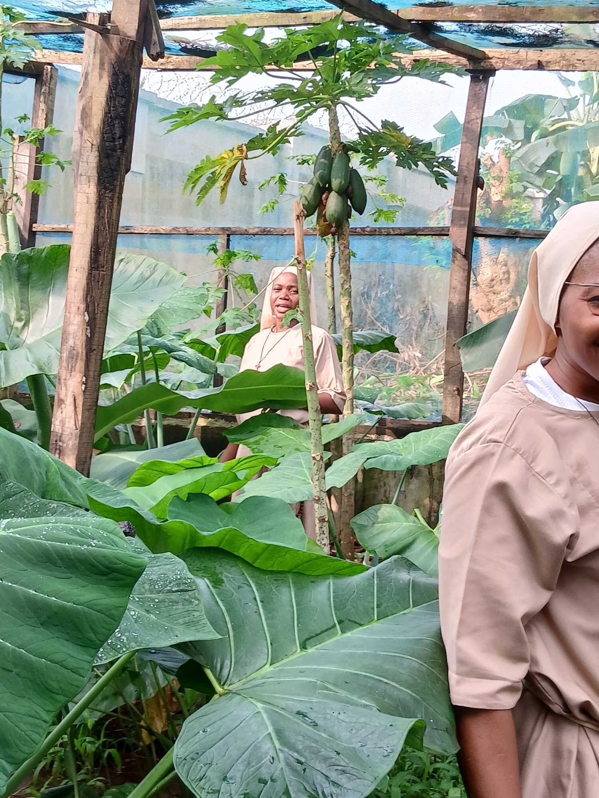
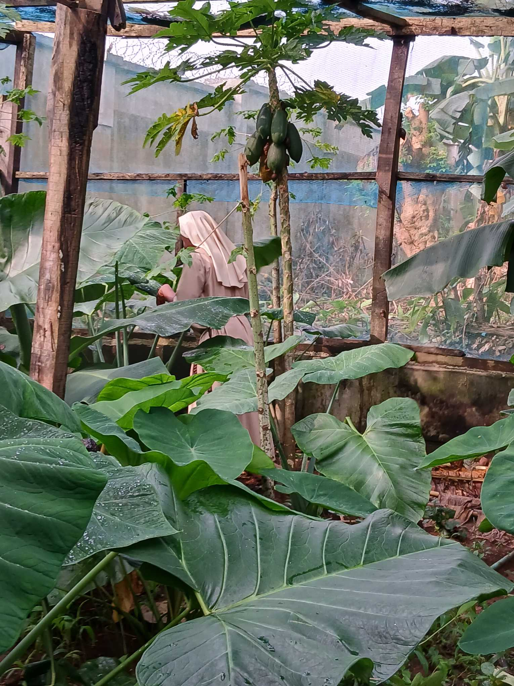
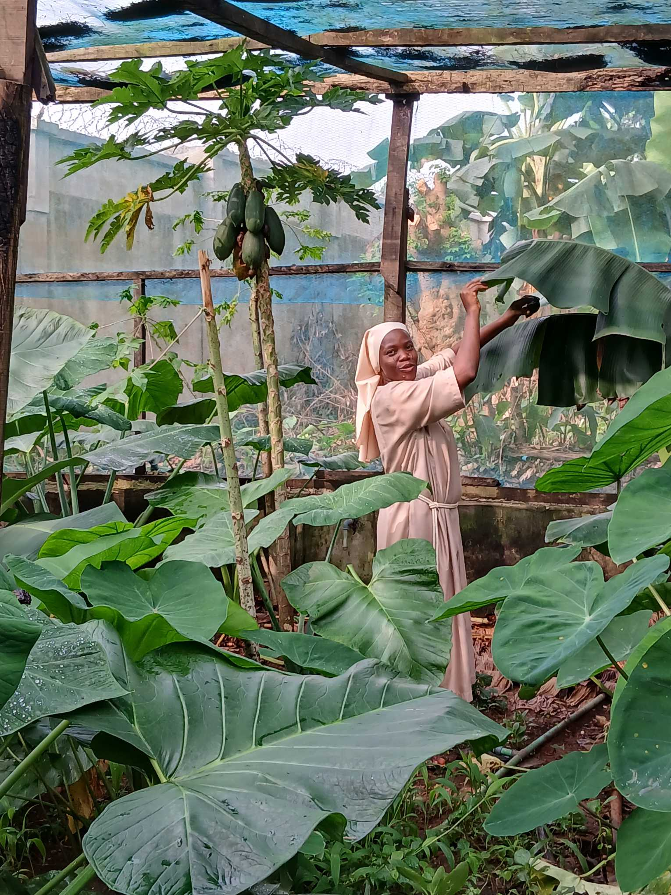
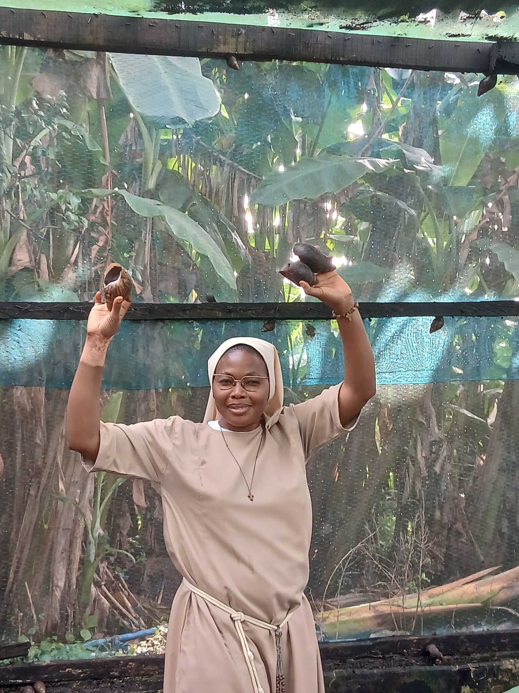

Product Gallery
Tap any image to view full size.


Life at the Monastery
Quiet moments of work, fellowship, and daily ministry — captured in the monastery grounds.






Ready to order?
Message us on WhatsApp with your quantity and location — we deliver across Nigeria.
Order on WhatsApp